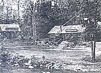
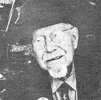

Issue # 73- January/February 1982
In Celebration of little-known MOTHER-type folks from all over.
THE WEBATUCK CRAFT VILLAGE:
A WORKING COMMUNITY
Less than a 1-1/2-hour drive north of New York City (and just a 40-minute jaunt northwest of Danbury, Connecticut), where the Appalachian Trail crosses New York Route 55, lies a community of independent artisans ... the Webatuck Craft Village in Wingdale, New York. Webatuck is currently home to a potter, a stained glass maker, a glass blower, a blacksmith, a silversmith, a trading company, and a country restaurant. And, over the years, frequent crafts demonstrations on the spacious grounds have attracted guest artisans ... including leatherworkers, broommakers, candle-dippers, sheep shearers, chair-caners, weavers, quilters, wood-carvers, and musicians.
Folks are invited to watch resident and visiting craftspersons use traditional tools to transform their various raw materials into one-of-a-kind works of art, and the spectators often stay to picnic on the shaded lawns or canoe and fish along the scenic Ten Mile River. Groups of ten or more individuals are asked to call for appointments (phone 914/832-6636) two weeks in advance . . . others are welcome to simply drop by year round (some businesses do close during February), Wednesday through Sunday, from 10:00 a.m. to 4:30 p.m.- JV.
HAL MURRAY: THE SEASONS OF MAN
In 1970, Hal Murray-a biology instructor at the University of Southern Colorado-put together (with the help of department head James LaVelle) a slide-music production to provide an overview of the information that was to be covered in their course in general biology. When the program-entitled The Seasons of Man -proved popular both in the classroom and with outside groups, Hal expanded the presentation . . . by focusing on the ways human beings affect each other and their environment.
Before long, the production had been viewed by some 43,000 people in 14 different states, and a sequel was in the making. Solutions to the problems presented in Part I: The Closing Circle . . . The Environmental Problem were addressed in Part II: The Greening of America . . . An Answer. Then Murray went on to produce two non-profit shows for children: Gee, I Wish I Had a Tail and What on Earth Is That?
Hal will present any of his programs in exchange for reimbursement of his travel expenses, and asks that requests be directed to him at the University of Southern Colorado, Life Sciences Department, Dept. TMEN, Pueblo, Colorado 81001.- Jackie Murray.
ART ANDERSON: SOLAR UTILIZATION NEWS
In 1974, when Art Anderson founded the Alternate Energy Institute (a non-profit organization that sponsors alternative energy projects), he became aware of the need for a solar-power publication that would appeal to the layperson. Consequently, in 1976 Anderson put together the Solar Utilization News (SUN) ... a periodical that has since been acclaimed for its clear and understandable presentation of technical data.
Each issue of the 16-page paper-which has a circulation of about 1,500-contains reports on the latest solar developments . . . and includes descriptions of the newest products on the market, a house profile, and a mini-project column that features do-it-yourself activities. SUN aims to give sufficient information for readers to duplicate the installations presented In its pages . . . but a source from which further details can be obtained is always furnished. Individual subscriptions to the Solar Utilization News are available for $10 per year ($15 for industrial or library subscriptions) from the Alternate Energy Institute, Dept. TMEN, P.O. Box 3100, Estes Park, Colorado 80517.- Dave Thomas.
WALTER CASEY JONES: LIFE AT 109
For almost seven years now, 109-year-old Walter Casey Jones has been traveling around the United States in a battered motor home, encouraging folks to reevaluate their notions concerning old age. "I want people to realize that-if they've got grit enough-they can do anything," the the gravel-voiced centenarian insists.
After leaving home at the age of 15, Walter spent 35 years hoboing from state to state, accepting employment wherever he could find it. During that time, the drifter claims, he held 500 separate jobs . . . and developed expertise in half a hundred occupations. Jones married at the age of 50, and settled on a career as a door-to-door salesman. But after his wife died-in 1974-the born traveler took to the road again . . . this time as a roving spokesman for the elderly.
Walter is quick to reveal the secrets of his longevity: clean living, avoiding worry, and-most important of all-enjoying productive activity. "The mind is like a muscle," he says. "You've got to keep using it." And the quick-witted old-timer has proved that he knows whereof he speaks . . . accomplishing such feats as earning the title of Master Mason shortly before his 92nd birthday. Philip Tenny-sonwho's currently putting together an oral biography of Jones, entitled Life at 109 -describes Walter as "an alert, lucid human being . . a total inspiration for eliminating our stereotypes of older people".-- JV.
IN BRIEF...
Two years ago VICTOR KLASSEN opened Burnac Produce Inc., a Ft. Pierce, Florida operation believed to contain the largest greenhouse in North America. The 21-acre growing complex was constructed specifically for producing Florida Seedless Cucumbers . . . and even though the vegetables-which are picked when they reach 16 of their estimated 22 maximum inches in leng-thare harvested at the rate of about 1,200 cucumbers three times a week, Klassen's yield has yet to catch up with consumer demand.
University of Washington professor BEN BRYANT has developed a process which converts agricultural residue into waterproof roofing materials that compare in strength to such substances as galvanized iron oraluminum, fiberglass, and asbestos cement board. The breakthrough has attracted inquiries from at least 35 countries: Pilot plants are already under construction in Haiti and the Philippines, and sites in Africa and Latin America are being considered, as well.
J. HERBERT JONES has built six sawdust cottages just north of Cartersville, Georgia. Jones claims that his building material-a combination of one bag of cement, two heaping wheelbarrow loads of sawdust, and enough water to produce a "sloppy wet" blend-is fireproof, moistureproof, termiteproof, and inexpensive. Though the durability of the substance has not yet been proved, since it's been In use for only three years, Jones is convinced that the material is all but indestructible.- JV.
|
 |
 |
|